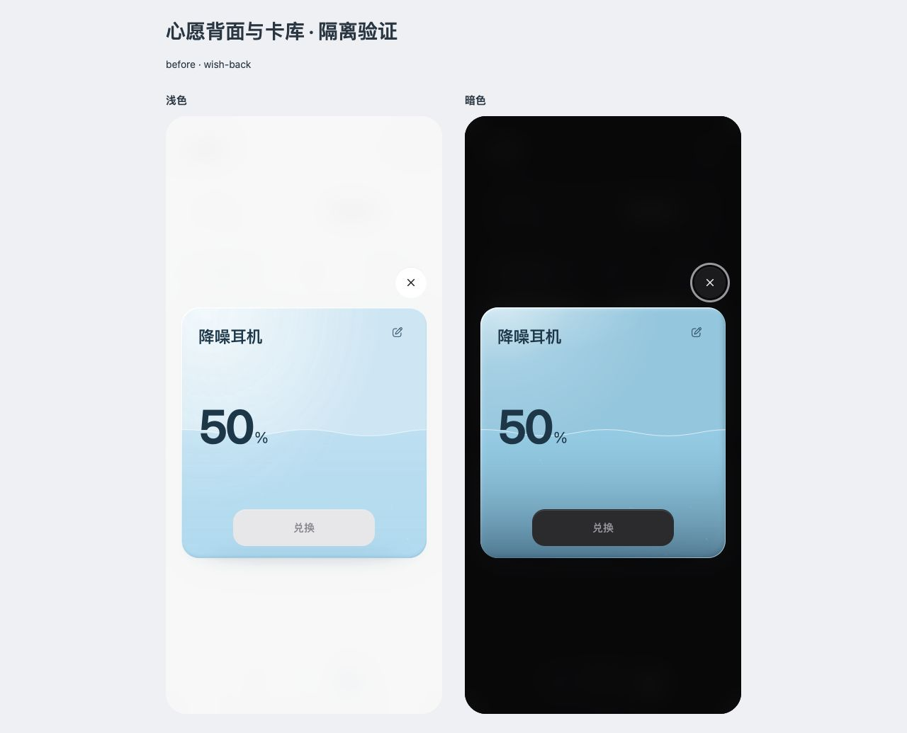
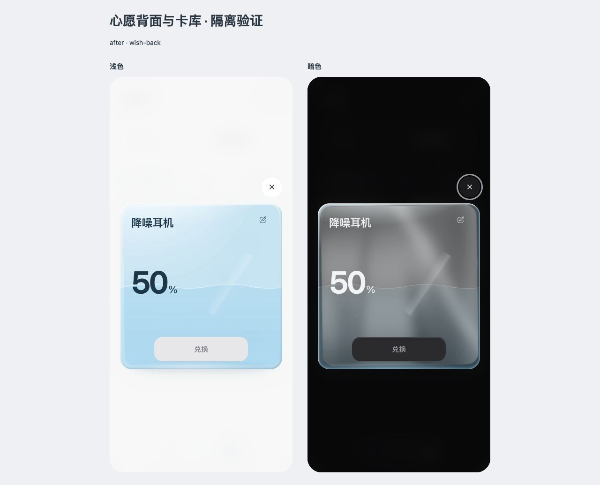
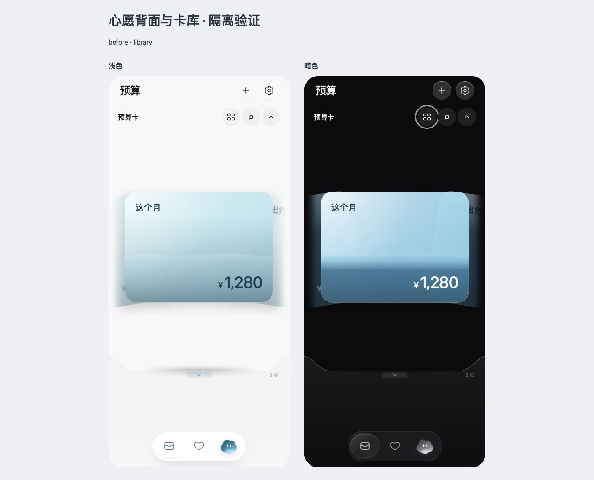
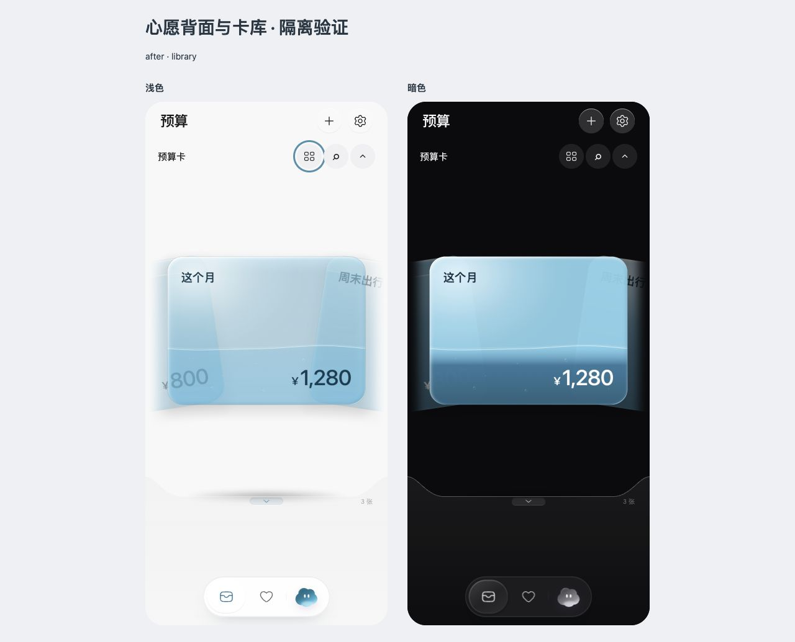
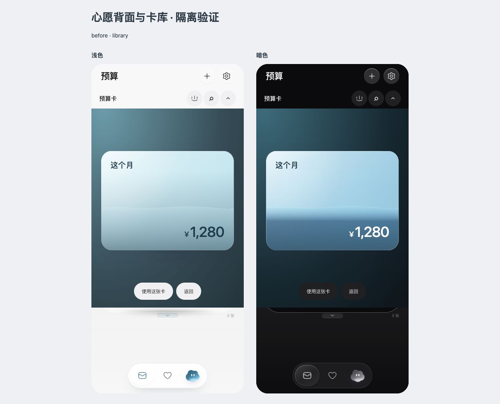
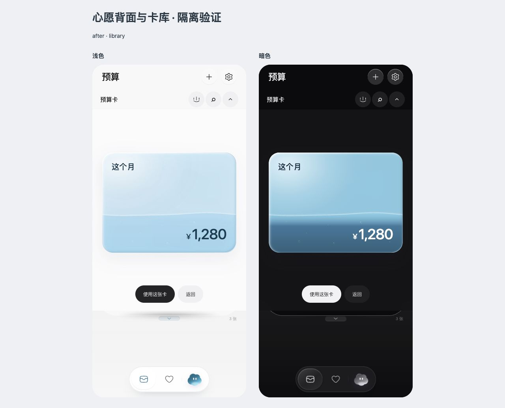

心愿背面与卡库 · 修改前后
未实现心愿的背面接续外层玻璃与内卡：浅色冰蓝透光，暗色银灰金属。卡库沿用预算主卡的透光、局部高光与水体，并整理搜索及放大层的中性色。
以下为同内容的浏览器截图，基线 59c9dd6。每张图内左侧浅色、右侧暗色；点击可看原尺寸。使用禁止写回的隔离示例，原生 App 未修改。
心愿背面




弧线卡库




球面放大




实际验证与待验收项
- 390 浅暗背面翻转、50% 置灰、100% 购买核对与兑现通过；破壳后仍为不带玻璃的收藏卡，已实现购买信息背面保持金属。
- 弧线／球面切换、放大／返回和键盘选卡后插入通过。搜索与减少动态效果列表采用中性色；原位换主题后贴图更新。
- 320＋160% 文字、768 卡库已检查，无横向溢出；空水没有残留气泡，满水保留顶部空隙。卡库沿用静态贴图预览，动态水体仍在首页与详情。
- 静止金属不持续重绘；翻面、破壳、插拔／换卡参数与业务逻辑未变。已有实验和原生工程未改。
- 此前暂缓的 MutationObserver 空节点日志仍存在，本轮未处理。未重测全部 21 页、系统减少动态效果、VoiceOver 或真机。
- 背面玻璃的密度、暗色内卡与正面的衔接，以及卡库亮边的强度，仍待 Rex 视觉验收。